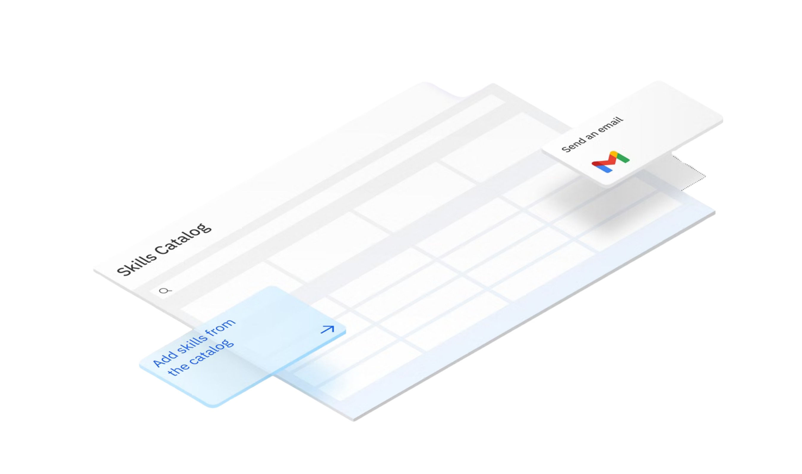

Expand Your Future
Get the flexibility you need. Choose an open source foundation model, bring your own, or use existing models.
It brings together tools for training models, managing data, automating workflows, and ensuring responsible, secure AI adoption, all in one flexible ecosystem.
Get the flexibility you need. Choose an open source foundation model, bring your own, or use existing models.
Create responsible AI with trusted enterprise data and governed processes by employing governance & security controls.
Access your structured and unstructured data for more accurate AI with an open, hybrid data structure.
Deploy and manage AI assistants and agents to automate and simplify business processes.
Accelerate your developers’ productivity and reduce time to market by infusing AI into the entire application lifecycle to automate development tasks and streamline workflows.
Develop custom AI applications faster and easier with an integrated, collaborative, end-to-end developer studio that features an AI developer toolkit and full AI lifecycle management.
Manage, prepare and integrate trusted data from anywhere, in any format so you can unlock AI insights faster and improve the relevance and precision of your AI applications.
Automate governance to proactively manage AI risks, simplify regulatory compliance and create responsible, explainable AI workflows.
